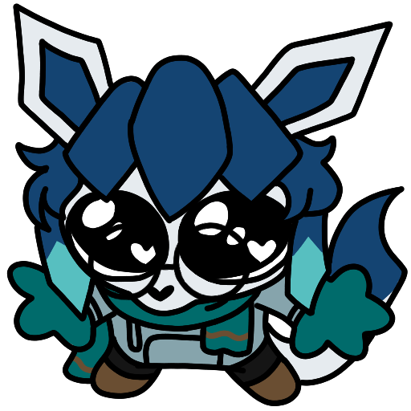

No posts yet!
I'm still establishing the website, so I haven't written anything yet.
Software Engineer • Needlessly Verbose • Gamer Mom
Hi! My name's Richard, but I've used the name Mobrun on the internet since I was, like, 8. I am mostly just including my first name (and not my last name) so that any potential employers looking at this site from my résumé know that I'm not lying, not to actually identify myself to any passers-by. Though, I've been online under the same pseudonym long enough that you can probably piece it together somehow.
This website mostly just exists to be a place where I can shove stuff that I've worked on. Thanks for stopping by!
In a more general sense, I'm just a guy. I like to play video games and eat and hang out with my friends and my wife. I'm from and currently live in Idaho, though I hold no loyalty to it. I work as a Software Engineer, but I'm honestly just okay at it. I like solving problems, so this is where I've ended up.
I resent the idea that my hobby is what defines me. If someone likes watching movies, they're not always a 'cinephile'. If someone likes music, they're not labeled as a 'music listener'. In the same way, I like to play video games, but I hate the term 'gamer'. Sort of carries with it a connotation of immaturity, impatience, and, frankly, misogyny. I'm only two of those things!
Anyway, my favorite games switch around a lot but right now my top 5 are Disco Elysium, Silksong, Super Smash Bros. (PM/P+ is the best one but Melee is more well known and gets my point across), Pokemon Mystery Dungeon: Explorers of Sky, and Balatro. Other heavy hitters are Hitman, Slay the Princess, Dark Souls, Katana Zero, Monster Hunter, and Outer Wilds.
Yeah, I don't know. I think it's funny. Something about like 'wine mom' or 'soccer mom' or 'boy mom' or whatever is very funny to me. Like, a middle-aged mother trying to redefine herself using a habit that she only picked up later in life. Accented by the idea that a 'gamer mom' would typically not fall for that same 'Facebook' style self-description, it paints the mental image of a 40-something woman who is not culturally a 'gamer' but instead just likes to play Call of Duty or something, complete with a Wisconsin inflection and religious sensibilities. Me being neither a woman nor a mother sort of adds to the silliness.
Is it funny now? Now that I've explained the joke, is it funny?
I'm still establishing the website, so I haven't written anything yet.
No tools yet!
Sorry, still putting everything together. Come back soon!

I've thrown together a wiki style database to help catalogue changes made for a Pokemon themed Minecraft mod that I've been helping out with.